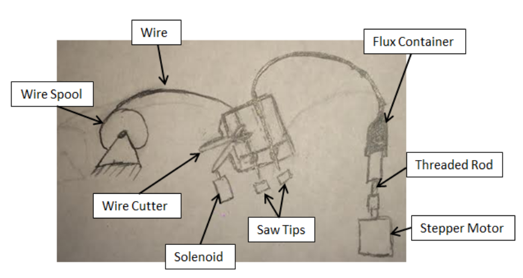

Mechatronics - Flux and Wire Dispensor
16-778, 18-578, 24-778 Spring 2015
Group G
Eric Newhall (enewhall)
Guillermo Cidre (gmcidre)
Christian Heaney-Secord (cheaneys)
Michael O'Connor (mkoconno)
Systems
- Part Seperator Design
- Vision Processing Design
- Part Placer Design
- Tray Positioner Design
- Flux and Wire Dispensor Design
Flux and Wire Dispensor Design
The purpose of this subsystem is to apply a dab of flux and two pieces of wire to the
surface of each saw tip. The subsystem is mounted on a linear bearing platform, allowing
it to move in the x direction so that it may reach each saw tip after they have been laid
down. A precise amount of flux is dispensed by a linear actuator pushing on the rear of
the flux container, pushing the flux through a plastic tube and out of an applicator tip
that will be positioned directly above the surface of each saw tip. This linear actuator
will be powered by a stepper motor with a threaded rod attached to its shaft, allowing
for complete control of how far the actuator moves while also providing a significant
amount of force to overcome the high viscosity of the flux [1]. A spool of wire will also
be mounted to this subsystem. A motor will control the unspooling of the wire, feeding
the wire into a channel in which it will be cut. The cut pieces will then be pushed out of
the channel which will be positioned such that the pieces come to lay on top of the dab
of flux on the saw tip. The wire will be cut by a modified pair of wire cutters that are
actuated by a solenoid attached to one of the handles. By having the wire contained in a
channel while it is being cut, we eliminate the possibility of the cut piece flying away
in an unwanted direction from the shear forces exerted on it. This subsystem is the final
subsystem that will interact with the saw tips in pre-tinning process, completing their
preparation to be tinned.

Flux and Wire Dispensor Implementation